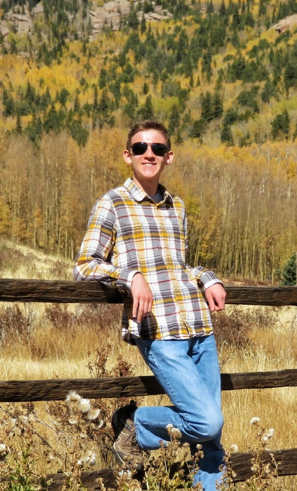

ABOUT / 02
About
Education, experience, and technical skills.

BACKGROUND
Mechanical design and hands-on engineering
B.S. Mechanical Engineering student through the CU Boulder and Colorado Mesa University Engineering Partnership Program. Expected graduation: May 2028. GPA: 4.0.
Technical focus: CAD, mechanical design, manufacturing, CFD, structural analysis, and prototype testing, with particular interest in aerospace hardware.
Outside engineering: mountain biking, outdoor recreation, and personal fabrication projects. Seeking Summer 2027 internships in hardware design, manufacturing, and testing.
EDUCATION / EXPERIENCE
Education and experience
B.S. Mechanical Engineering
CU Boulder / Colorado Mesa University Engineering Partnership Program. GPA: 4.0. President's List for three semesters.
Stagehand - Oak View Group
Support setup and teardown of touring productions and live events with crews of 10+ workers. Follow safety procedures around heavy equipment under strict production deadlines.
Scene Shop Technician - CMU
Constructed theatrical sets and shop equipment with woodworking and fabrication tools. Independently built an 18-foot saw station and led coworkers in constructing four mobile worktables.
Treasurer - CMU Biking Club
Manage club finances, explore fundraising opportunities, and support club rides and student activities.
TOOLS / PRACTICE